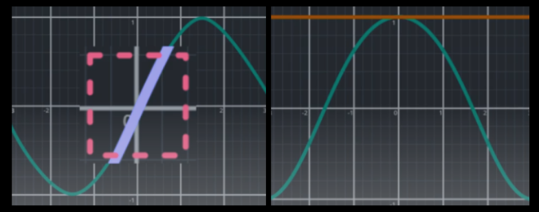

First, pick the operating point. Choose some state of the non-linear system to linearise around. It is helpful to linearise around an equilibrium state.
Linearise sines and cosines

Zooming in, the graphs of $y=sin\phi$ (left) and $y=cos\phi$ (right) look almost identical to $y=\phi$ and $y=1$ respectively at $\phi \approx 0$.
Linearisation finds the tangent line at an operating point. The tangent when $\phi$ is small, here 0, for $sin\phi$ is $y=\phi$ and for $cos\phi$ is $y = 1$.
Linearise products of variables
An example would be the multiplication of an input and a state. The key insight is that product of a very small number times a very small number, is a tiny number whose value is so small that it can be safely ignored; which leads to cancellation of terms.